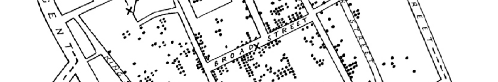

Summary
Closing remarks

Unit summary here.
Discuss spatial analysis, key principles, methods change through time — often the questions don’t. Hope that students are equipped with the ability to do spatial analysis, but more importantly, really understand how the techniques work - the data, the assumptions, the mathematics… all of which will enable you to critically appraise your results and those of others, and ultimately to come a better understanding of spatial patterns, processes and relationships.
In Introduction to Spatial Analysis we have covered…
Acknowledgments
The development of Introduction to Spatial Analysis has benefited from fruitful discussions with Jonny Huck and Matt Dennis, testing by James Tomlinson, and wider support from the Mapping, Computing and Geographical Information Science research group.
The design of the practical materials has also been improved thanks to resources made available by the wider GIS community, including Sergio J. Rey, Dani Arribas-Bel and Levi J. Wolf (Geographic Data Science with Python), Luc Anselin (An Introduction to Spatial Data Science with GeoDa), Edzer Pebesma and Roger Bivand (Spatial Data Science with Applications in R), and Adam Dennett (Guide to Spatial Interaction Modelling).
I hope that Introduction to Spatial Analysis has inspired you to explore the topic further, and if so, I’d recommend delving into the resources above, alongside the wider literature included in the reference list.
Matt